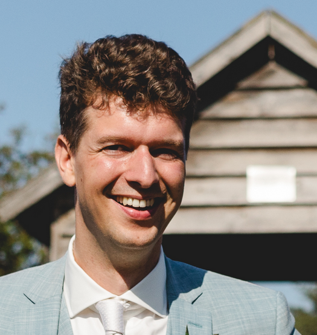
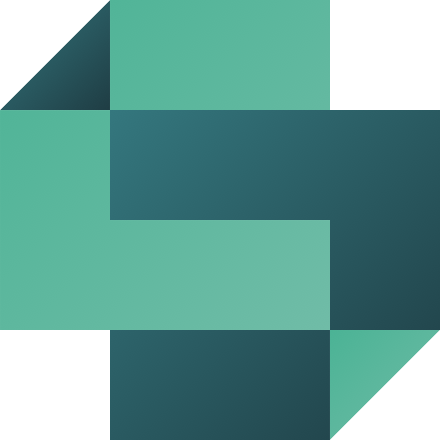
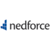
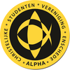
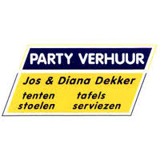
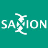
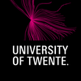
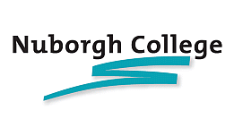

Ruben Smit
Full-Stack Software EngineerFull-stack software engineer met een sterke productfocus. Ik werk het liefst op het snijvlak van klant, business en techniek: uitzoeken wat gebruikers écht nodig hebben, dat vertalen naar een datamodel, userflows en interface, en het vervolgens zelf bouwen.
Bij CDD Solutions ontwierp ik de opvolger van een verouderd en slecht schaalbaar administratiepakket, zowel technisch als functioneel. Dat ontwerp was mijn afstudeeropdracht, beoordeeld met een 10, en werd de basis voor het platform dat ik de jaren daarna heb meegebouwd. Het staat inmiddels in de markt en de eerste grote klanten worden geonboard.
Mijn kracht is de breedte. Ik ga regelmatig mee naar klanten en schakel net zo makkelijk met sales, accountmanagement en directie als met het ontwikkelteam, waardoor ik goed kan afwegen wat een feature waard is en waar de echte behoefte zit. Daarnaast lever ik graag net werk op: heldere architectuur, goede tests, een prettige developer experience en schaalbare deployments.
Waar ik naar zoek: een in-house productteam waar engineers het vertrouwen krijgen om zelf te bepalen wat er gebouwd wordt. Stack is open: nu Ruby on Rails, Hotwire, Tailwind CSS en Docker, maar ik werk net zo graag met een andere taal of een ander platform.
Zwolle RubenSmit ruben-smit rubensmit.com

Technieken
- Dagelijks
- Ruby on Rails, Hotwire (Turbo & Stimulus), Tailwind CSS, PostgreSQL, Docker
- Ook mee gewerkt
- JavaScript, Ember.js, JSON:API, OAuth2, CI/CD, Linux, embedded & IoT
- Werkwijze
- Productontwerp, datamodellering, userflows, UI-ontwerp samen met UX, geautomatiseerd testen, code review
Werkervaring
Senior Software Developer
CDD Solutionsseptember 2018 - heden
- Senior Software Developerdecember 2021 - heden
- Software Developerjuli 2020 - november 2021
- Junior Software Developerseptember 2018 - juli 2020
CDD Solutions levert het administratie- en compliancepakket voor de trustsector en andere financieel dienstverleners. Het bestaande pakket was verouderd, moeilijk schaalbaar en daardoor lastig verkoopbaar. Ik heb het ontwerp gemaakt voor de opvolger: een architectuur die technisch schaalbaar is en functioneel flexibel genoeg voor de uiteenlopende processen van onze klanten.
Sindsdien bouw ik als developer aan dat platform: datamodellering, userflows, interfaceontwerp samen met UX en de implementatie in Ruby on Rails, Hotwire en Tailwind CSS. Daarnaast ga ik mee naar klanten en schakel ik met sales, product en directie over wat er gebouwd moet worden en waarom. Het product staat inmiddels in de markt en de eerste grote klanten worden geonboard.

Software Engineer Intern
Moneybirdfebruari - juli 2020
Een oplossing ontwikkeld waarmee Moneybird gestructureerd feedback van klanten verzamelt. Van probleemdefinitie en ontwerp tot een volledige implementatie in front- en backend, die in productie is genomen.
Junior Software Developer
Nedforcefebruari - augustus 2018
Meegedraaid in een team dat aan meerdere klantapplicaties werkte. Onder andere verantwoordelijk voor het implementeren van het redesign van npo3.nl.

Assessor Internorum (bestuurslid)
C.S.V. Alphaseptember 2015 - september 2016
Een jaar fulltime bestuur: verantwoordelijk voor interne zaken zoals kringen, commissies en ledenzorg. Veel geleerd over samenwerken, verantwoordelijkheid dragen en het aansturen van vrijwilligers.

Algemeen medewerker
Partyverhuur Jos en Diana Dekkermei 2009 - maart 2019
Naast school en studie: van (loon)administratie en evenementenvergunningen tot chauffeur en tapper. Veel schakelen en doorpakken om te leveren wat de klant nodig heeft.

Opleiding
HBO-ICT Software Engineering
Hogeschool Saxion2017 - november 2021
Afgestudeerd met een 10 op het ontwerp van het nieuwe platform van CDD Solutions. Tijdens de opleiding de specialisatie Internet of Things gevolgd, met onder andere het ontwerp en de bouw van een draadloos sensornetwerk voor speeltuinfabrikant Nijha waarmee het gebruik van speeltuinen gemeten kan worden.

Creative Technology
Universiteit Twente2013 - 2015
De eerste 1,5 jaar van de bachelor Creative Technology gevolgd, met projecten zoals een onderzoek naar het volgen van personen in een gebouw via bluetooth.

VWO, N&T en N&G met Informatica
Nuborgh College Lambert Franckens2006 - 2013
Als profielwerkstuk een 3D-printer gebouwd op basis van het ontwerp van de Prusa i2.

Vrijwilligerswerk
Full-Stack Webdeveloper in de ICT-commissie
C.S.V. Alphaseptember 2014 - juni 2020
Met de ICT-commissie een volledig nieuwe website gebouwd voor een vereniging van honderden leden: chat, formulierenbouwer, forum, fotoalbums en SEPA-incasso's. Een Ruby on Rails API met JSON:API, OAuth2 en Mailgun, met een Ember.js frontend. De code is open source en beschikbaar via github.com/csvalpha.